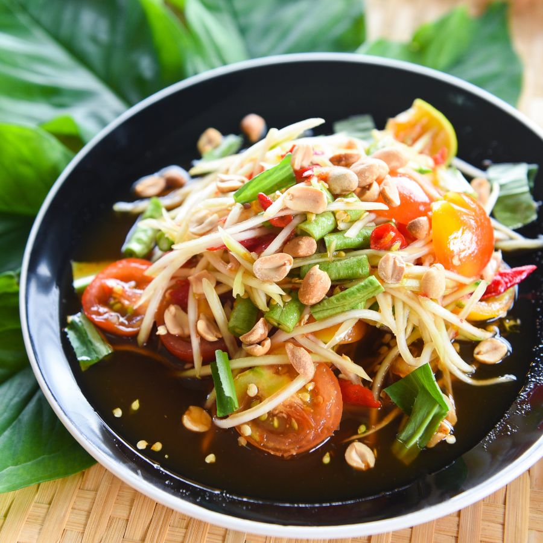

🥕
🥦
🍅
🍋
🍄
🥚
❤️ AI FOOD RECOMMENDATION
มีอะไรในตู้เย็น?
ให้เราช่วยคิดเมนูให้คุณ
ไม่ต้องคิดให้ยุ่งยาก! เพียงเลือกวัตถุดิบที่คุณมี แล้วให้ AI ช่วยแนะนำเมนูอาหารไทยแสนอร่อย
🍳 เริ่มเลือกวัตถุดิบ🥗 เปลี่ยนวัตถุดิบที่มี ให้กลายเป็นเมนูแสนอร่อย

ใช้งานง่าย ๆ ใน 3 ขั้นตอน ✨
เริ่มต้นค้นหาเมนูอาหารที่เหมาะกับคุณ
1. เลือกวัตถุดิบ
เลือกวัตถุดิบที่คุณมีอยู่ในตู้เย็น
2. AI แนะนำเมนู
ระบบช่วยวิเคราะห์และจัดอันดับเมนูอาหาร
3. เริ่มทำอาหาร
เลือกเมนูที่สนใจและดูวิธีการทำอาหาร